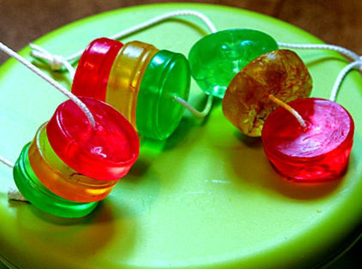

Мыло «Ожерелье»

Описание
Настоящий мыловар – это всегда художник. И поэтому его мыло– это не просто косметический продукт, а произведение искусства, нередко выполняющее функцию элегантной и стильной детали интерьера ванной комнаты. Рецепт именно такого мыла (а вернее целой их связки) мы представляем сегодня вашему вниманию. Мыльное ожерелье – это еще и чудесный сувенир, который подойдет для того чтобы отметить вниманием тех, кто вам по-настоящему дорог. Каждая из «бусин» нашего ожерелья это самостоятельный продукт, обладающий массой полезных свойств.
Состав
- Прозрачная мыльная основа – 300 грамм
- Масло виноградной косточки – 1/3 чайной ложки
- Масло жожоба голден – 1/3 чайной ложки
- Масло Кофе – 1/3 чайной ложки
- Краситель пищевой гелевый алый-2-3 капли
- Краситель пищевой гелевый желтый-2-3 капли
- Краситель пищевой гелевый зеленый-2-3 капли
- Ароматизатор пищевой "Кокос"– 5-6 капель
- Ароматизатор пищевой "Орхидея"– 5-6 капель
- Ароматизатор пищевой "Мед цветочный"– 5-6 капель
- Форма Круг
- Веревочка или цепочка для нанизывания мыльных бусин
Рецепт
- Растопите 100 грамм основы на водяной бане или в микроволновой печи. Соблюдение температурного режима – важное условие успешности процесса мыловарения. Обеспечить его можно, используя специальные приборы для плавления мыльной основы.
- Добавьте масло виноградной косточки, алый краситель и ароматизатор пищевой "Кокос". Тщательно перемешайте.
- Перелейте мыло в форму и оставьте его застывать при комнатной температуре.
- Растопите еще 100 грамм основы, добавьте масло жожоба голден, желтый краситель и ароматизатор пищевой "Орхидея". Тщательно перемешайте.
- Вылейте основу в форму и оставьте застывать при комнатной температуре
- Растопите оставшиеся 100 грамм основы. Добавьте масло кофе, зеленый краситель и ароматизатор пищевой "Мед цветочный". Тщательно перемешайте
- Оставьте продукт застывать при комнатной температуре.
- Используя раскаленное шило, проделайте в центре каждого мыльного кусочка отверстие.
- Проденьте в дырочку красивую веревку или цепочку и свяжите концы. Ваше мыльное ожерелье готово!